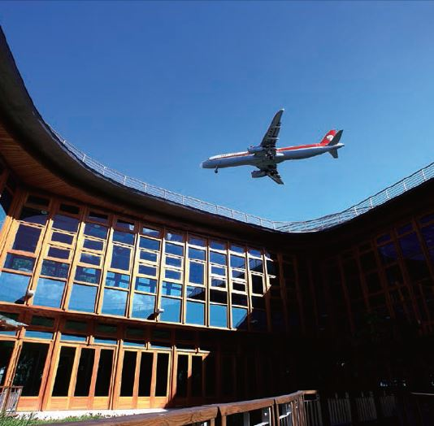

CROSS-STRAIT RELATIONS
Since the government relocated to Taiwan in 1949, it has exercised jurisdiction over Taiwan proper, Penghu Islands, Kinmen Islands, Matsu Islands and a number of smaller islands, while China has been under the control of the authorities in Beijing. Beginning with the acceleration of Taiwan’s democratization in the late 1980s, many restrictions concerning civil exchanges with China have been lifted. Today, Taiwan is one of the biggest investors in China. In 2017, the value of cross-strait bilateral trade was US$139 billion. In that year, travelers from China made nearly 2.7 million visits to Taiwan, up from 329,204 in 2008.